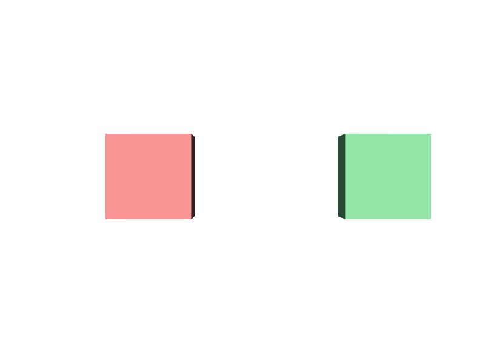

子だけを残そうとする
親をInactiveにすると子孫もすべて外れます。子だけ残したいときは、子のほうを別の場所へ移すか、親はActiveのままで子をInactiveにします。
STEP 72 · STAGE CONTROL
Primを消さずに、いないことにします
今日これだけ
公式情報に基づく説明
activeはPrimに付けるMetadataで、既定値はtrueです。falseにすると、そのPrimはStageの構成から取り除かれ、既定の走査にも描画にも現れなくなります。取り除かれるのはそのPrim自身だけではなく、子孫すべてです。ファイルからPrimの記述が消えるわけではないため、あとでtrueへ戻せます。
USDA
#usda 1.0
(
defaultPrim = "World"
metersPerUnit = 1
upAxis = "Y"
)
def Xform "World"
{
def Cube "Shown"
{
double size = 1
color3f[] primvars:displayColor = [(0.85, 0.2, 0.2)]
double3 xformOp:translate = (-1.4, 0, 0)
uniform token[] xformOpOrder = ["xformOp:translate"]
}
def Cube "Hidden" (
active = false
)
{
double size = 1
color3f[] primvars:displayColor = [(0.15, 0.35, 0.85)]
double3 xformOp:translate = (0, 0, 0)
uniform token[] xformOpOrder = ["xformOp:translate"]
}
def Cube "AlsoShown"
{
double size = 1
color3f[] primvars:displayColor = [(0.2, 0.7, 0.3)]
double3 xformOp:translate = (1.4, 0, 0)
uniform token[] xformOpOrder = ["xformOp:translate"]
}
}active = falseは、Prim名の後ろの丸括弧の中に書きます。ここはPrim Metadataを書く場所で、Propertyを書く波括弧の中とは別です。青い箱の中身（sizeや色）はそのまま残っていることに注目してください。
結果

Hiddenは記述されているのに描画されません。位置もそのままなので、中央が空いています。examples/lesson-41/active-inactive.usda / Apple USD Tools 0.25.2 のusdrecord（Hydra Storm・Metal）/ macOS 26.5.2・Apple M4確かめる
from pxr import Usd
stage = Usd.Stage.Open("active-inactive.usda")
print([str(p.GetPath()) for p in stage.Traverse()])
# ['/World', '/World/Shown', '/World/AlsoShown', '/World/ShotCam']
print([str(p.GetPath()) for p in stage.TraverseAll()])
# ['/World', '/World/Shown', '/World/Hidden', '/World/AlsoShown', '/World/ShotCam']
hidden = stage.GetPrimAtPath("/World/Hidden")
print(hidden.IsActive()) # False
print(hidden.IsDefined()) # True … 定義はされている
print(bool(hidden)) # True … Primオブジェクトとしては有効
hidden.SetActive(True) # 元に戻せる
print(hidden.IsActive()) # TrueIsDefined()はTrueのままです。Inactiveは「定義されていない」のではなく「構成から外されている」状態だからです。STEP 37で見たoverによる未定義とは、外れる理由が違います。
Diagram
Python
from pxr import Usd, UsdGeom
stage = Usd.Stage.CreateNew("toggle.usda")
UsdGeom.Xform.Define(stage, "/World")
cube = UsdGeom.Cube.Define(stage, "/World/Hidden")
prim = cube.GetPrim()
prim.SetActive(False)
print(prim.IsActive()) # False
print(prim.HasAuthoredActive()) # True
prim.ClearActive() # 記述を消して既定へ戻す
print(prim.IsActive()) # True
print(prim.HasAuthoredActive()) # False
stage.Save()SetActive(False)でactive = falseを書き、ClearActive()でその記述自体を取り除きます。SetActive(True)はactive = trueを明示的に書くので、ClearActive()とは結果が少し違います。
USDA → Python mapping
USDA
active = false↓Python
prim.SetActive(False)USDA
（記述を取り除く）↓Python
prim.ClearActive()USDA
（状態の確認）↓Python
prim.IsActive()Beginner notes
よくある間違い
親をInactiveにすると子孫もすべて外れます。子だけ残したいときは、子のほうを別の場所へ移すか、親はActiveのままで子をInactiveにします。
描画だけ止めたいならvisibilityを使います。Inactiveは構成から外すので、その枝のPropertyも取得できなくなります。
既定の走査から外れているだけです。TraverseAll()で確認できます。
前者はactive = trueを書き、後者は記述自体を消します。上のLayerから見たときの意味が変わります。
Glossary
true。active = falseにより、子孫ごと構成から外された状態。activeを書く、または記述を取り除くPython API。Official references
確認日: